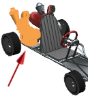
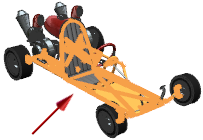

查看剩余未求解的约束
-
将您的光标停在状态列的图标上。
错误约束节点的状态图标 有这个工具提示：与其它约束冲突
各个错误约束组件节点状态图标 有这个工具提示：。
各个警告约束节点状态图标 有这个工具提示：。
在这个例子中，是警告节点子对象的组件节点是：
-
des06_GKengine，它的状态图标 有这个工具提示：。
-
des06_GK_Frame，它的状态图标 有这个工具提示：。
所有未求解的装配约束都包含了 des06_GK_engine 和 des06_GK_Frame。
-
-
在约束导航器中，单独选择各个组件，并在图形窗口中查看它们。


您想要更近一些查看这些组件和约束。
所有这些组件都是约束不一致，所以按组件状态模式现在有用了，这个模式有一个不一致约束组件的文件夹。
-
右击第一列的列表题并选择按组件状态分组。
 工作部件
工作部件状态 = 不一致约束 (3)
状态 = 未约束 (2)
状态 = 完全约束 (6)
状态 = 部分约束 (49)
状态 = 固定 (0)
状态 = 在布置中忽略约束 (0)
状态 = 约束受抑制 (0)
状态 = 已卸载几何体 (0)
状态 = 已关闭组件 (0)
您想要找出为什么这个模式中说有三个不一致约束的组件而不是两个。